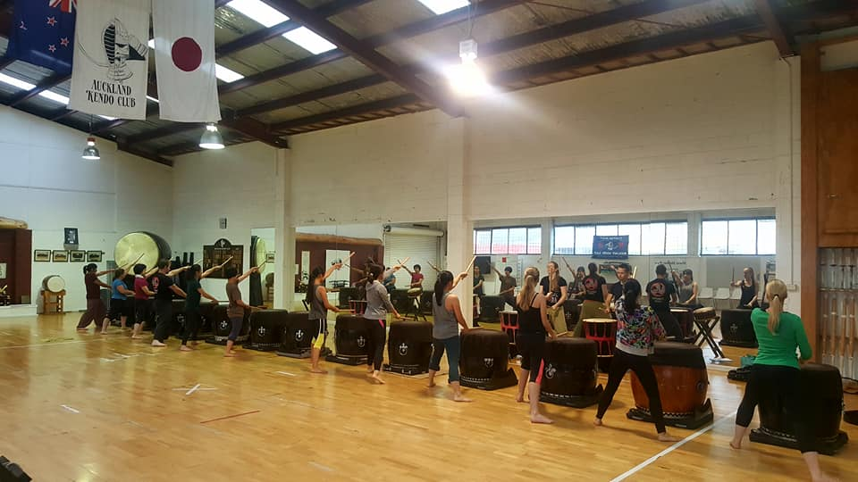

Learn Taiko Drumming in Auckland
Experience the power, rhythm, and energy of contemporary Japanese drumming! Whether you are looking for a unique way to get active, a welcoming community, or an unforgettable team-building event, our programs are designed for all ages and fitness levels. No prior musical or drumming experience is required.

Introductory Taiko Courses (Beginners)
Our beginner Taiko classes are the perfect entry point into the world of Japanese drumming. In these energetic, step-by-step sessions, you will learn the fundamentals of the Tamashii style, which focuses on powerful, athletic movement and contemporary rhythms.
- What you will learn: Proper stance, striking techniques (kata), basic rhythms, and a full, choreographed contemporary piece by the end of the course.
- Fitness & Fun: Taiko is a full-body workout! It is a fantastic way to relieve stress, build core strength, and improve your coordination in a supportive environment.
- Next Steps: Graduates of our introductory course are invited to join our ongoing intermediate classes.

Corporate Team Building Workshops
Looking for a team-building activity in Auckland that breaks the mold? Our corporate Taiko workshops are highly interactive, loudly collaborative, and incredibly fun.
- Play as One: Taiko drumming requires deep listening, teamwork, and synchronization. We teach your team how to communicate without words.
- Customized to You: We can run workshops ranging from a quick 60-minute icebreaker to a half-day immersive experience.
Sign Up or Enquire